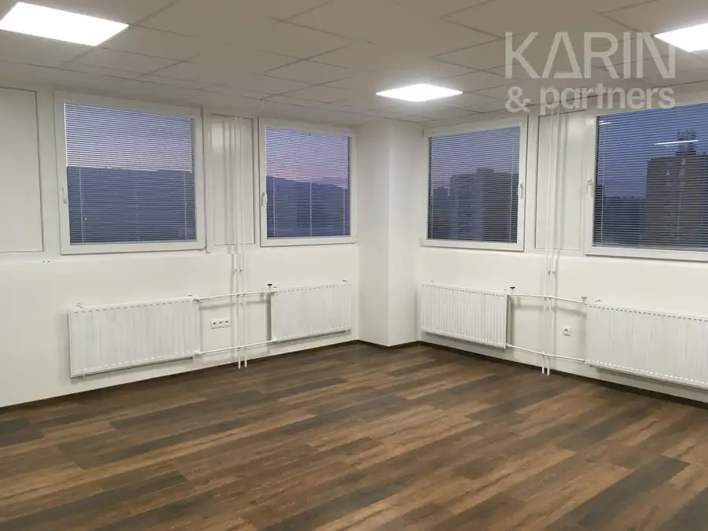
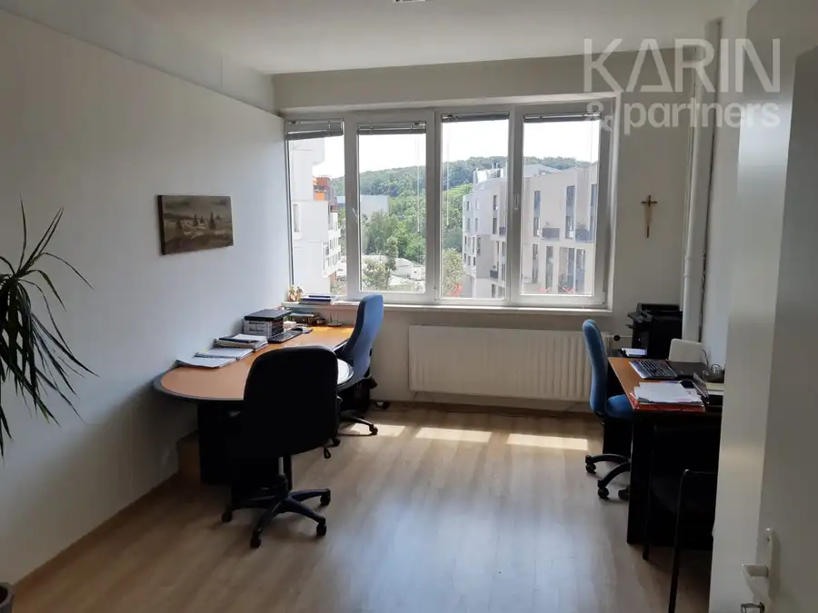
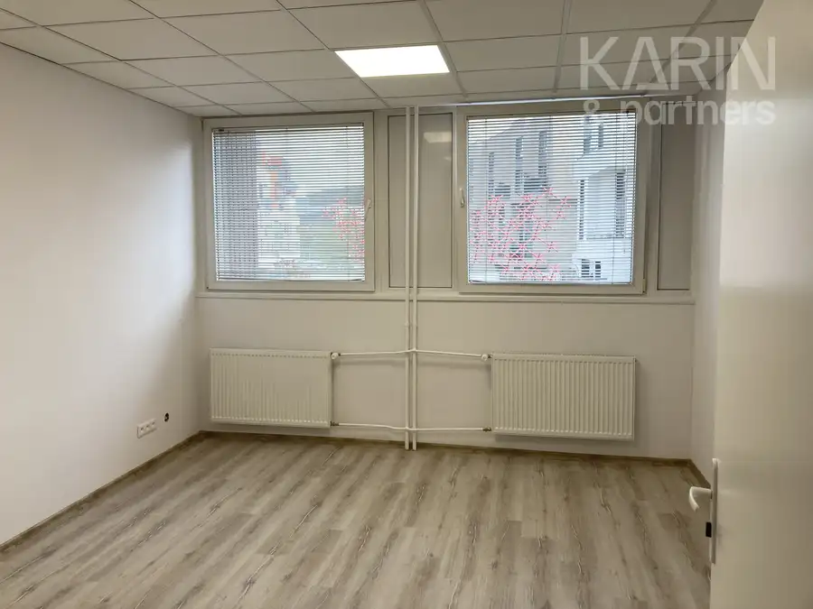
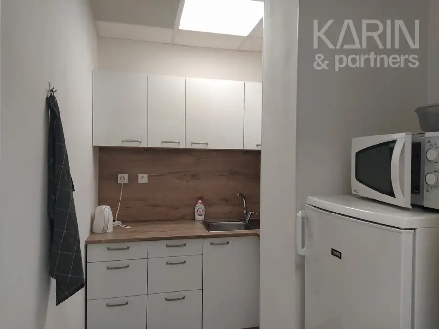
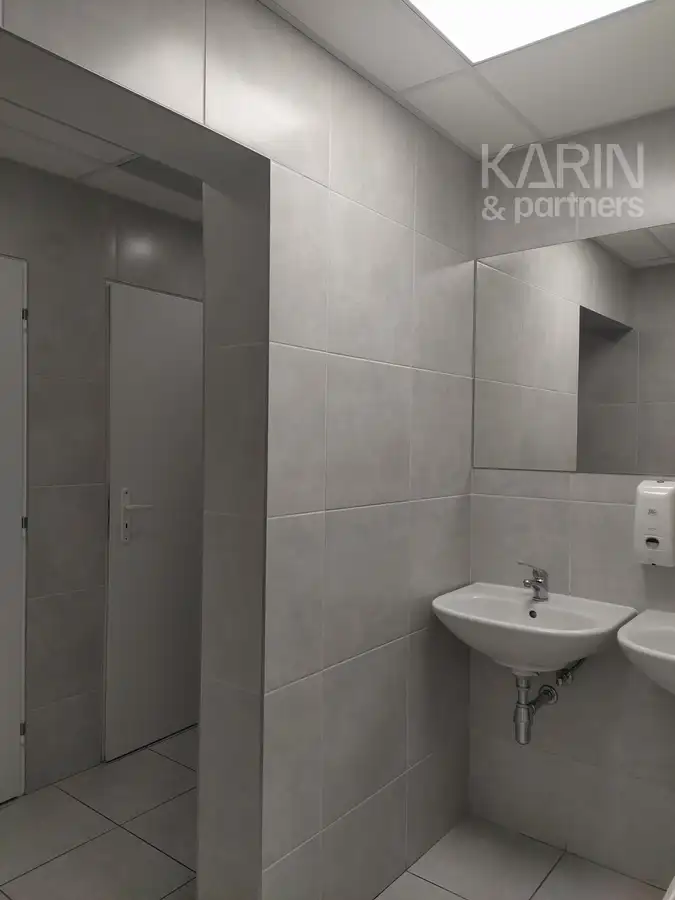
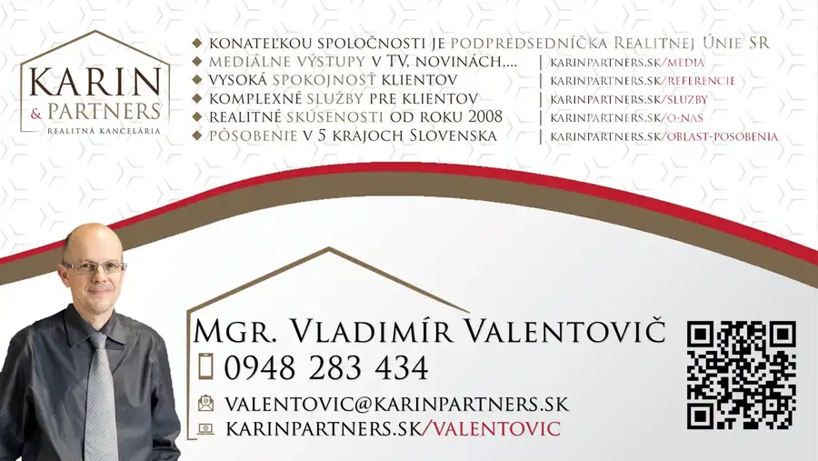
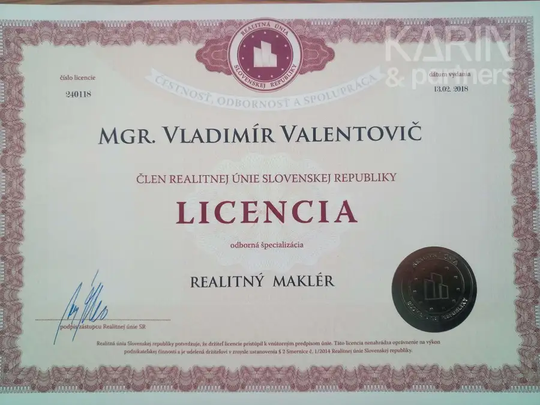
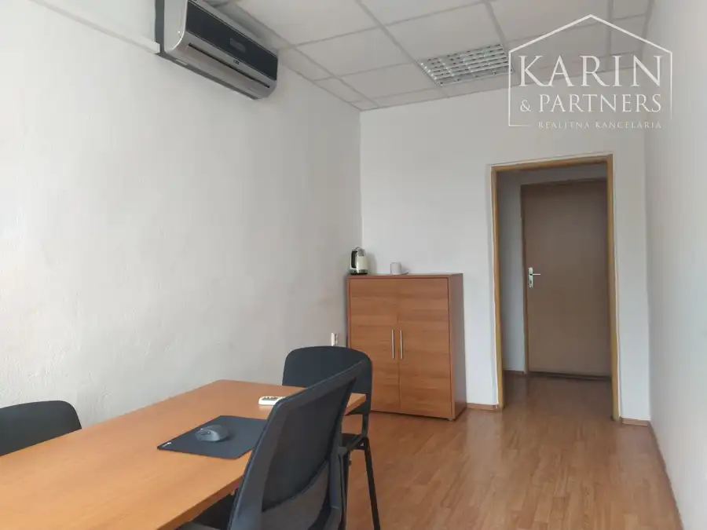
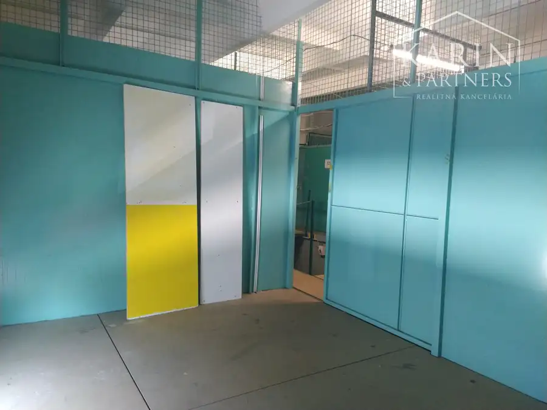
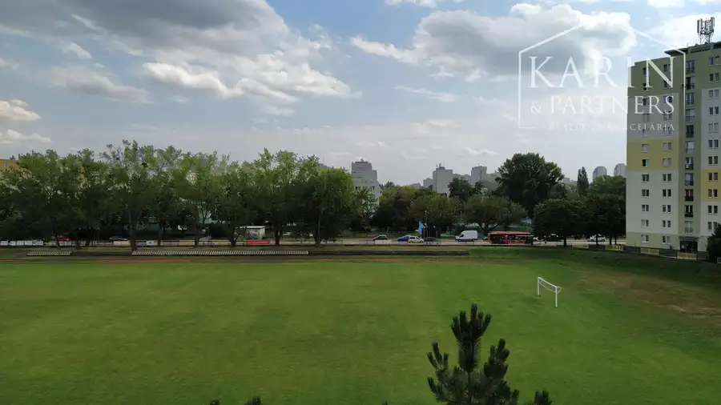

Prenájom klimatizovaná kancelária 24 m2, ul. Polianky, BA IV., Dúbravka
Dúbravka, Bratislava







- Plocha24 m²
- StavKompletná rekonštrukcia
- VlastníctvoIné
- Energetická triedaB
O nehnuteľnosti
Ponúkame na prenájom klimatizovanú kanceláriu 24 m2, ul. Polianky, BA IV., Dúbravka. Karin & Partners ponúka kancelárie na rôznych podlažiach zateplenej administratívnej budovy prístupné dvoma výťahmi. Vybavenie: sadrokartónové predsadené a akusticky izolované steny, laminované dvere, plávajúce podlahy, stropné akustické podhľady, plastové okná /žalúzie/. Výška stropov do 2,80m. Mužské a ženské WC pre všetky kancelárie na jednotlivých podlažiach a kuchynka. Bezplatné parkovanie pred budovou. Recepcia a non stop prístup do budovy. Uzamykateľný prístrešok pre bicykle, kolobežky ako aj ich elektrické verzie s možnosťou dobíjania. Blízka dostupnosť na diaľničný obchvat všetkými smermi. Z kancelárií je pekný výhľad na okolité lesy Koliby a Devínskej kobyly. Cena: 14,07.-€ /m2 /mesiac vrátane služieb + 20.-€/mesiac bivalentná klimatizácia. Spotreba elektriny a bivalentnej klimatizácie sa účtujú na základe reálnej spotreby priamo v kancelárii. V cene nájmu je ústredné radiátorové vykurovanie, voda a upratovanie spoločných priestorov. Optické internetové pripojenie je v réžii nájomcu. Ceny sú uvedené bez DPH. DPH sa pripočítava len u platcov DPH. Kontakt: Mgr. Valentovič +421 948 283 434 valentovic@karinpartners.sk
Parametre
- Druh
- Kancelárie, administratívne priestory
- Dátum zverejnenia
- 23. 07. 2026
- Energetický certifikát budovy
- B
- Počet izieb / miestností
- 1
- Rok poslednej rekonštrukcie
- 2025
- Stav nehnuteľnosti
- Kompletná rekonštrukcia
- Telekomunikácie
- Internet, Optická sieť
- Typ
- Prenájom
- Typ konštrukcie
- Zmiešaná
- Vlastníctvo
- Iné
- Vybavenie
- Výťah
- Vykurovanie
- Ústredné, Klimatizacia
- Úžitková plocha
- 24 m²
Kde to je


Mohlo by Vás zaujímať

Komerčné priestoryNové Cena na vyžádáníLEN: 144.-€/ mesiac! Prenájom neklimatizovaná kancelária 12 m2, Hattalova ul., BA III. Nové Mesto. Nové Mesto, Bratislava 12 m²
Komerčné priestoryNové Cena na vyžádáníLEN: 120.-€/ mesiac! Prenájom sklad 16 m2, ul. Vajnorská, BA III., časť Jurajov dvor. Nové Mesto, Bratislava 16 m²
BytNové Cena na vyžádáníPrenájom rekonštr. 3 izb. byt 65m2 s balkónom 2m2 na Tokajíckej ul., BA II. Ružinov. Ružinov, Bratislava 4-izbový67 m²4. podlažie